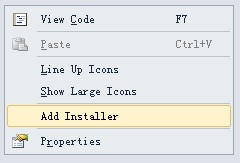

用VS做一个windows服务其实很简单。
下面是一个用VS2010做windows服务的简单例子和一些注意事项。
1.新建一个windows服务
2.添加代码
vs会自动生成一些代码
在Service1.cs中会看到如下代码
其中OnStart为启动服务时调用的方法；OnStop为停止服务时调用的方法。
每个服务都还有其他方法，比如暂停、恢复等，可以重载基类的方法来实现，如暂停：
自己的业务逻辑就可以在这些方法中调用实现。
ps：在做windows服务时常常是要弄一个循环还处理某些业务逻辑，常见的方法是用一个Timer控件，值得注意的是Toolbox中的Timer控件默认是System.Windows.Forms.Timer，显然在这里是不会起作用的，这里可用System.Timers.Timer，可以直接在Toolbox中右键添加。
3.添加Installer
这一步很关键，在处理完业务逻辑后需添加一个Installer才能使你的windows服务能够被安装。
在VS中添加Installer也很简单，操作如下：
右键Service1.cs
再到View Desiger视图中右键

Installer就添加好了。
4.设置服务参数
可以在程序中先给定windows服务的参数
在添加Installer时会自动生成一个ProjectInstaller.cs，在这个文件中有个InitializeComponent方法，如下：
this.serviceProcessInstaller1.Password = null;
this.serviceProcessInstaller1.Username = null;
为设置服务的登陆账号密码，如果不想设置用户名密码也可以采用本地系统帐户运行服务，代码如下：
this.serviceProcessInstaller1.Account = System.ServiceProcess.ServiceAccount.LocalSystem;
其他设置也可在此完成。
5.安装和卸载windows服务
制作完成的windows服务发布后为一个exe文件，要想到目标机器上安装使用这个服务，可以用微软提供的installutil工具，通过命令行的方式实现安装和卸载。
installutil工具在目录：系统盘:\WINDOWS\Microsoft.NET\Framework\v4.0.30319下，运行cmd，输入
C:\WINDOWS\Microsoft.NET\Framework\v4.0.30319\installutil xxxx.exe 回车，即可完成windows服务的安装。
卸载则为输入 C:\WINDOWS\Microsoft.NET\Framework\v4.0.30319\installutil /u xxxx.exe 回车。
ps：可以保存为bat文件执行则更为方便。可参考：http://www.cnblogs.com/nbwzy/archive/2007/05/30/764571.html
一个简单的windows服务就制作完成了，开始打开你的VS自己动手试试吧。